|
Funcionamiento de código
Archivos.java
Librerias
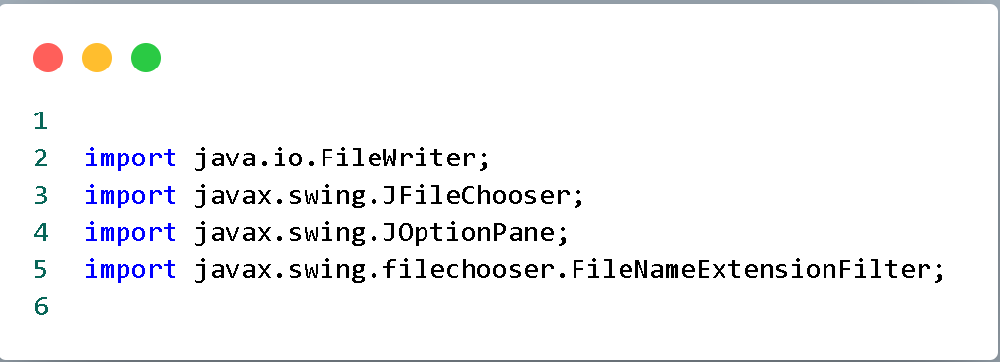
Estas bibliotecas se
utilizan para permitir al usuario
seleccionar una
ubicación de archivo, escribir datos en
un archivo de texto y mostrar mensajes
de
confirmación o error durante el proceso.
Metodo escribir
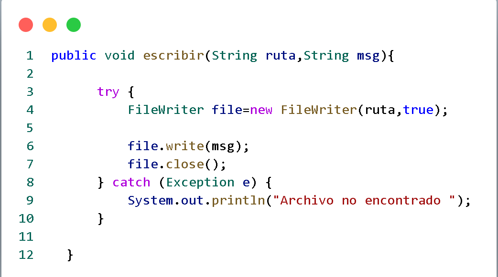
El método escribir se
encarga de escribir el contenido (msg)
en un archivo
especificado por su ruta (ruta).
Primero, se intenta abrir el archivo en
modo de escritura
adicional (true) usando un FileWriter.
Luego, se escribe el contenido en el
archivo y se
cierra. Si ocurre algún error, se
captura la excepción y se imprime
"Archivo no encontrado"
en la consola. Este método simplifica el
proceso de escritura en un archivo de
texto y
maneja las posibles excepciones que
puedan ocurrir durante la operación.
Metodo rutaArchivo
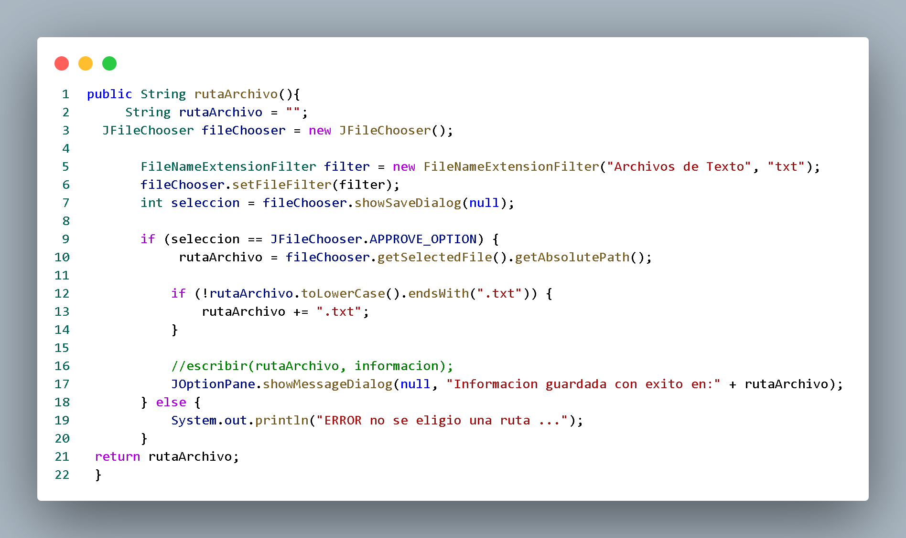
El método rutaArchivo
muestra un cuadro de diálogo que permite
al usuario
seleccionar una ubicación y nombre de
archivo para guardar datos. Luego,
devuelve la ruta
seleccionada como una cadena de texto.
Si el usuario no selecciona un archivo o
cancela la
operación, muestra un mensaje de error
en la consola.
Fifo.java
Librerias
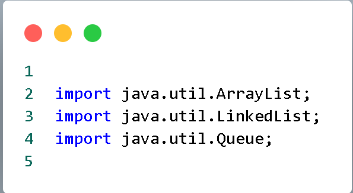
Las bibliotecas
java.util.Queue y
java.util.LinkedList sirven
para implementar una cola
(FIFO) que rastrea los
marcos de página.
mientras que
java.util.ArrayList sirve
para mantener un registro de
la cola de marcos de página
en cada paso del algoritmo.
Clase fifo
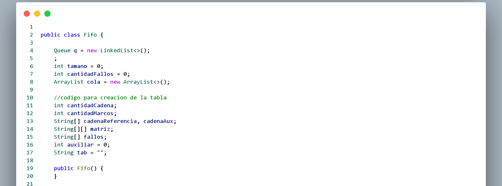
Esta parte del
código es la definición de
la clase Fifo y la
declaración de sus variables
miembro que se utilizarán en
la implementación
del algoritmo FIFO para el
reemplazo de páginas. Los
métodos de la clase se
encargan de realizar las
operaciones necesarias para
aplicar el algoritmo y
generar una tabla que
muestra el proceso.
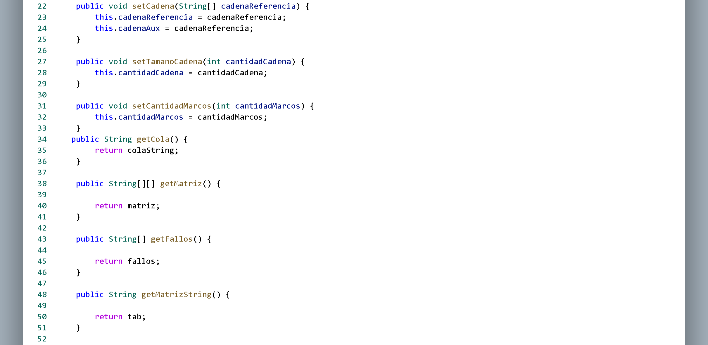
Estos métodos
permiten configurar la
simulación con la cadena de
referencia, el tamaño de la
cadena, y la cantidad de marcos.
Además, proporcionan acceso a
información importante como el
estado de la cola, la matriz de
marcos de página, los fallos de
página, y una representación de
la matriz en formato de cadena.
Estos métodos son esenciales
para la ejecución y supervisión
de la simulación del algoritmo
FIFO.
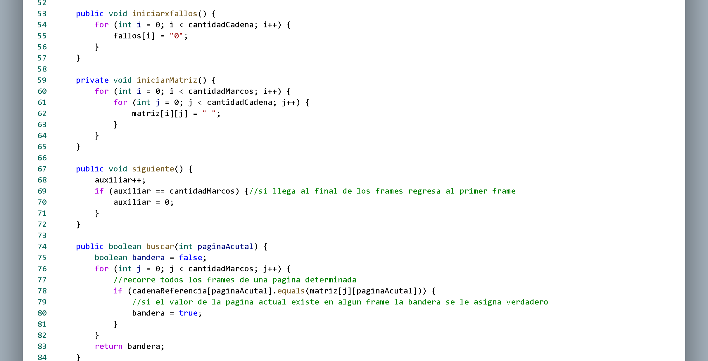
iniciarxfallos() y
iniciarMatriz() preparan las
estructuras de datos para la
simulación, mientras que
siguiente() y buscar(int
paginaActual) gestionan el
estado y la búsqueda de páginas
en los marcos de página.
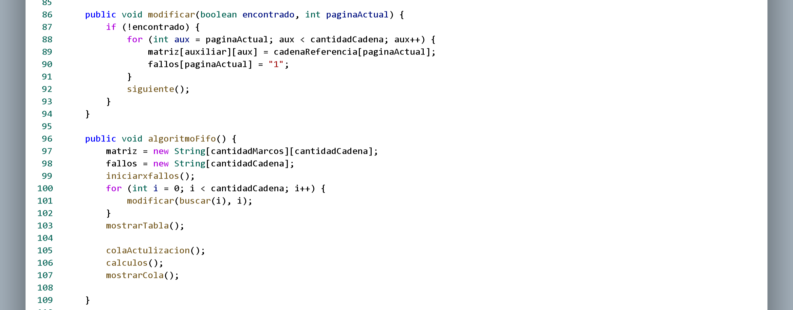
El método modificar en la
clase representa la
actualización de la matriz de
marcos y el array de fallos en
el contexto del algoritmo FIFO;
si una página no está presente
en los marcos, la coloca en el
marco actual y registra un fallo
de página. Por otro lado, el
método algoritmoFifo
implementa la lógica completa
del algoritmo FIFO,
inicializando estructuras de
datos, recorriendo la cadena de
referencia para ajustar la
matriz y el array de fallos, y
luego mostrando el estado final
de la simulación, incluyendo la
tabla de marcos, la cola y
realizando cálculos de
rendimiento. En conjunto, estos
métodos forman una simulación
completa del algoritmo FIFO para
la gestión de fallos de página
en sistemas operativos.
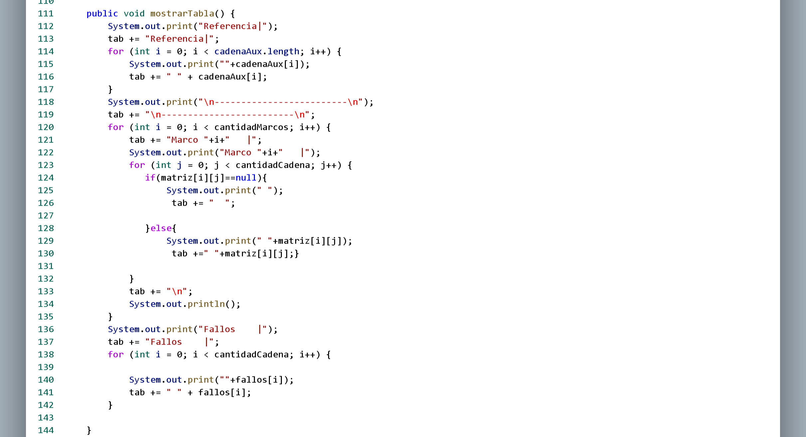
El método
mostrarTabla de la clase
imprime y registra en una
variable (`tab`) el estado final
de la simulación del algoritmo
FIFO. Muestra las referencias,
seguido de una tabla que
representa el contenido de los
marcos de página en cada paso de
la simulación. La tabla refleja
las páginas presentes en cada
marco, indicando fallos de
página con "1".
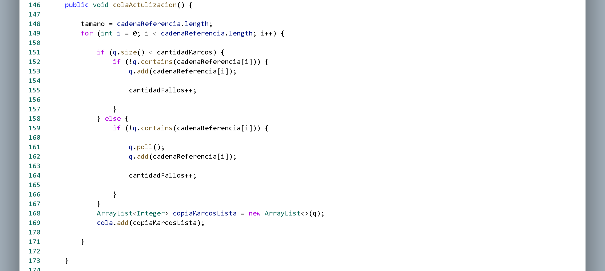
El método colaActulizacion
actualiza dinámicamente la cola
utilizada en el algoritmo FIFO
durante la simulación. Itera
sobre cada página en la cadena
de referencia y ajusta la cola
según si hay espacio disponible
o si necesita realizar una
operación de poling y agregar.
Al mismo tiempo, registra el
estado actual de la cola en cada
paso, almacenando una copia en
la lista cola. Este método es
esencial para mantener un
seguimiento de cómo evoluciona
la cola de marcos de página
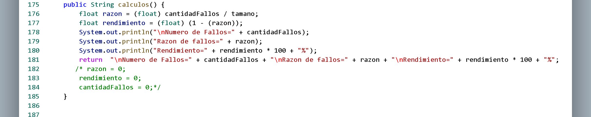
El método
calculos de la clase realiza
cálculos de rendimiento para el
algoritmo FIFO. Calcula la razón
de
fallos y el rendimiento, imprime
estos resultados en la consola y
devuelve una cadena con la
información. La variable
`colaString` se utiliza para
almacenar información sobre la
cola de marcos de página y se
inicializa como una cadena
vacía.
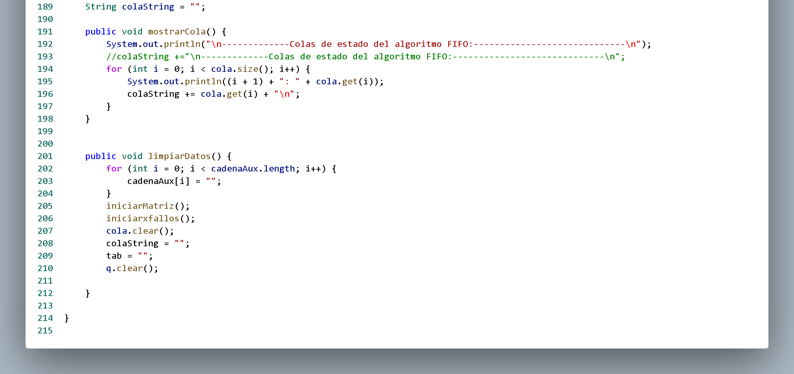
El método
mostrarCola imprime el estado
de la cola y acumula
esta información en la variable
colaString. El método
limpiarDatos reinicia varios
aspectos de la simulación,
incluyendo la cadena auxiliar,
la matriz de marcos, el array de
fallos, la cola, colaString, y
tab. Estos métodos de
visualización
detallada de la cola y la
capacidad de reiniciar los datos
para una nueva simulación.
|